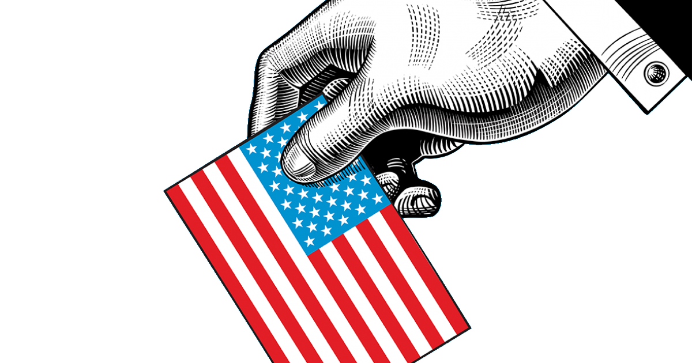

Electoral College Opinion Writing
Writing —
Writing
Research
Argumentative Writing
Submitted to UCSD's The Guardian Wi '20

Background
The President of America—chief of the most powerful military the world has ever seen, the person in the drivers seat of the world economy, and the person acting as the figurehead for democracy. But did you know that the system to elect this person, dubbed the Electoral College, was sent to the "Commitee on Posponed matters" because the founders ran out of time and didn't think it was that all that important to figure out? Maybe we should revise it. Read more at the link below!
Update the Electoral College
As Americans furiously and anxiously refresh the election results in the next few days, many will be surprised at the closeness of the race and question the workings of our elections. We look at the results knowing the crossroad we stand at for the future of America and it is a big deal that our preferred candidate wins. What stands in our way is the electoral college, a vastly outdated system that makes our elections complicated, drab, and fundamentally unfair.
You would be surprised to know that that the way we pick presidents wasn’t on the top of the ‘to-do’ list for the founders of our nation. In fact, the way we pick the leader of our nation--the world’s most powerful person--was a matter left in late August 1787 to the “committee on postponed matters” because the founders ran out of time and chose to debate other topics.
The committee on postponed matters was let by David Brearly and consisted of 10 other delegates. They made major decisions on the president’s powers, created the office of the vice president, but also hastily created the electoral college, “whose complexity makes it less likely that it could have emerged from full floor debate”.
Brearly and the other delegates created the electoral college to mimic the way seats are handed out in the house of representatives. This was thought to be the fairest at the time because it balanced slave states and free states as well as large and small ones. In committee, the electoral college must have seemed like a decent solution to a not-super-important problem, as it was almost sure that no candidate would receive a majority of the vote and that the house of representatives would therefore choose the president. To Brearly’s credit, the future was unforeseen; there were no political parties, no previous record to go on, and they knew Washington would win the first presidency with a hundred percent of the votes.
The creation of political parties mixed with the electoral college had the unintended effect of forcing a two-party system in the United States. When the electoral college, a winner take all system, is paired with political parties, there simply would be no point in voting for third parties when a simple majority wins it all. In other countries, the one with the most votes wins, not the one with more than half. Because of this system, states stay with parties over generations and rarely vote for the other party, which polarizes the country and creates a focus on several key swing states that decide the election.
This is inherently unfair, as this inflates the value of votes in swing states compared to other parts of the country. Even worse is that voters in swing states do not accurately represent the nation demographically nor do they fairly represent policy interests. Presidential candidates campaign mostly on issues that are important in swing states and spend most of their time campaigning there as well. Elections become dreary for voters in states that already have a decided majority and politics become less engaging. Worse is that it creates a feedback loop of party identification in these states that is rife with confirmation bias and is easily targetted by fake news. Larger political consequences include gridlock in D.C, a more divided nation, and parties that struggle to advance their agenda even when in power.
Although it distorts the value of an individual vote, the electoral college does do several things well. First, it encourages candidates to campaign across the nation in rural towns as well as in urban centers. It creates a shield against voter fraud, as it distributes the tax of fraudulent votes across several states, and it avoids problems with the vote-counting of simple majorities seen in Florida in the 2000 election.
Despite these pros, the electoral college must be changed. It has had an enormous impact on the policy, direction, and character of this nation, though it was never designed for the system anyway. Although we have made it work for the past centuries, it has far too many drawbacks and is simply a flawed design. Fundamentally, the electoral college never took political parties into consideration and was therefore flawed from the start. For the well-being of the country, the electoral college should be redesigned, and a serious decision needs to be made about changing the electoral college and encouraging a multiparty system. It would lead to politics that are more nuanced, more interesting, and fairer, which are critical to protecting our democracy and our voice.